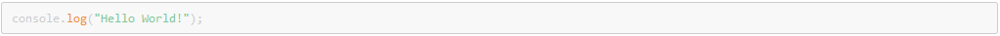
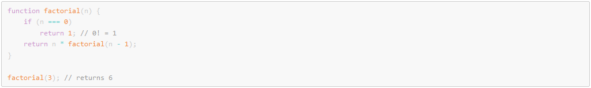
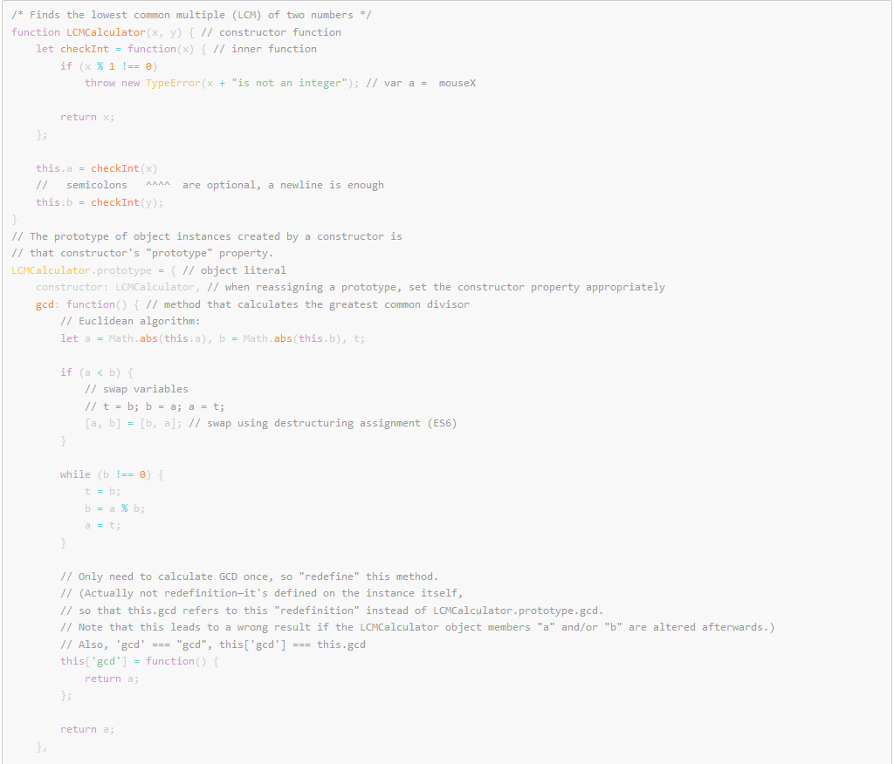

Javascript Language - Code examples using PrismJS
JavaScript (/ˈdʒɑːvəˌskrɪpt/), often abbreviated as JS, is a high-level, interpreted scripting language that conforms to the ECMAScript specification. JavaScript has curly-bracket syntax, dynamic typing, prototype-based object-orientation, and first-class functions.
Hello World:
A simple recursive function:
More advanced example:
Alongside HTML and CSS, JavaScript is one of the core technologies of the World Wide Web. JavaScript enables interactive web pages and is an essential part of web applications. The vast majority of websites use it, and major web browsers have a dedicated JavaScript engine to execute it.
As a multi-paradigm language, JavaScript supports event-driven, functional, and imperative (including object-oriented and prototype-based) programming styles. It has APIs for working with text, arrays, dates, regular expressions, and the DOM, but the language itself does not include any I/O, such as networking, storage, or graphics facilities. It relies upon the host environment in which it is embedded to provide these features.
Initially only implemented client-side in web browsers, JavaScript engines are now embedded in many other types of host software, including server-side in web servers and databases, and in non-web programs such as word processors and PDF software, and in runtime environments that make JavaScript available for writing mobile and desktop applications, including desktop widgets.
The terms Vanilla JavaScript and Vanilla JS refer to JavaScript not extended by any frameworks or additional libraries. Scripts written in Vanilla JS are plain JavaScript code.
Although there are similarities between JavaScript and Java, including language name, syntax, and respective standard libraries, the two languages are distinct and differ greatly in design. JavaScript was influenced by programming languages such as Self and Scheme. The JSON serialization format, used to store data structures in files or transmit them across networks, is based on JavaScript.